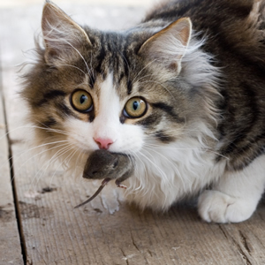
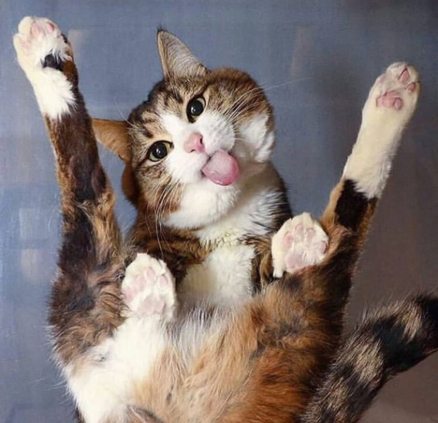
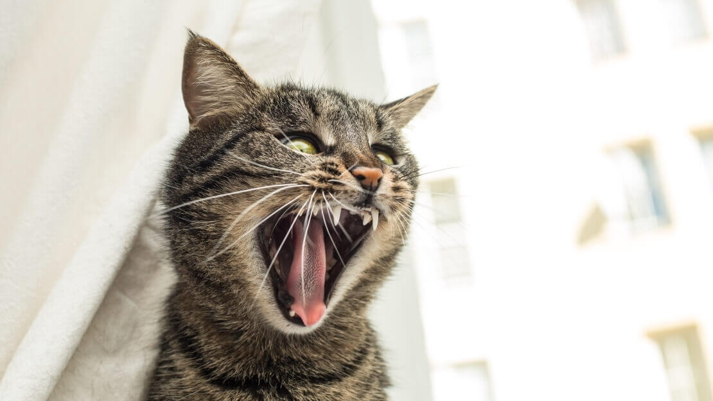

Зачем кошкам такие большие глаза?
Огромные глаза относительно тела развились у кошачьих из-за необходимости охотиться в условиях низкой
освещенности. Однако такой размер глаз затрудняет постоянную перефокусировку с близких объектов на
дальние и
обратно. Автор книги Cat Sense Джон Брэдшоу отмечает, что по этой причине зрение кошки подстраивается
под
среду ее обитания: уличные животные, как правило, дальнозоркие, а большинство домашних — близорукие.

Охота нужна кошкам ради охоты
Кошки охотятся, даже если они не голодны. Ученые Университета Джорджии в рамках проекта KittyCam
наблюдали, что пойманная добыча съедается кошками лишь в 28% случаев. Остальные жертвы бросаются ими на
месте или гордо приносятся хозяевам. Вот такие вот наши с вами «пушистики» кровожадные.
Зачастую охота нужна кошкам не для пропитания — они просто так «развлекаются»

Кошки — близорукие
Большие глаза позволяют кошкам видеть вдалеке, но вот с расположенными в непосредственной близости
объектами у них не все так хорошо. Этот факт не дает возможность кошкам четко видеть вблизи небольшие
предметы. Домашние животные могут почувствовать их усами, но не рассмотреть.

У «корабельных» кошек есть дополнительный палец
Это оставило свой след в эволюции. Более 10% кошек в прибрежных городах Новой Англии и Новой Шотландии
имеют дополнительные пальцы. Ученые считают, что такая редкая мутация, как полидактилия, возникла у
обитающих на кораблях кошек еще в середине 18 века.